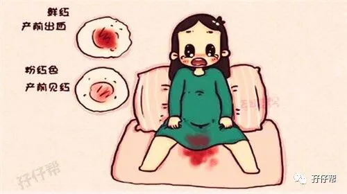
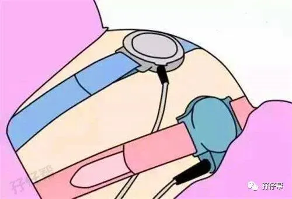
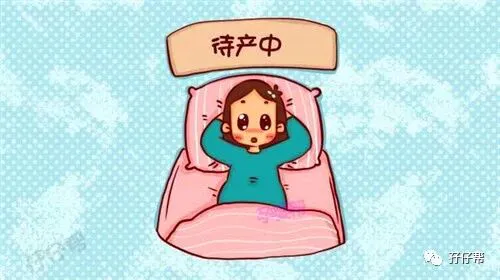
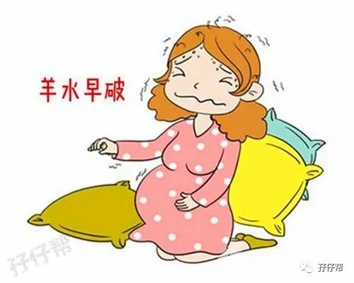
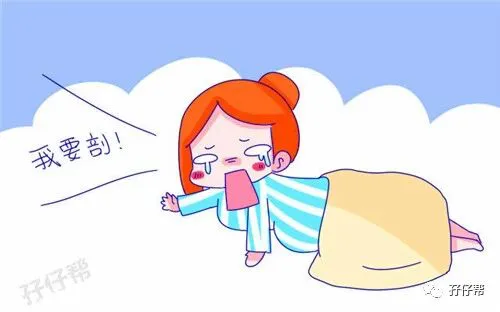
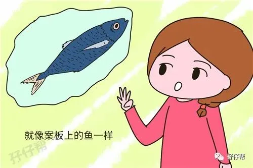

欢迎关注孖仔帮～
我是圆圈妈，孖仔帮接下来要给双胞胎准妈妈分享圆圈妈的双胎剖宫产记实录，因篇幅较长，将分为上中下三部分：
（上）你看不看？双胞胎妈妈直播剖腹产全过程
（中）你看不看？双胞胎妈妈直播剖腹产全过程
（下）你看不看？双胞胎妈妈直播剖腹产全过程
备注：图片来源于网络，考虑到孕妈咪的产前心情，图片大多都采用搞笑漫画形式，让剖腹产没那么恐怖。
1
“阿娟，35床见红了，快找下值班医生！”
“啊！35床终于要生了呀！”
“是啊，就是那个单绒的双胎妈妈…”
35床就是我,一个即将卸货的单绒毛膜囊双羊膜囊双胎妊娠的孕产妇。
今天是我的孕周35周+5天，33周+2那天，因假性宫缩严重挂急诊被收入院，一直住到今天，住院保胎历时18天。
也难怪护士是那种反应，在医院待了这么久，我甚至知道那个叫阿娟的护士非常迷恋当时正热播的偶像剧《花千骨》里面的老干部霍建华，而且是骨灰级别的着迷。
20150718 周六，早晨7点左右，我憋尿憋醒了，在厕所里发现纸巾上有红血丝，量不多，粘连的那种.我预感不对劲，赶紧叫醒圆圈爸喊护士来。
于是就听到值班护士刚才的对话，从她们的对话，我预感我怕是熬不到36周足月了（留医部的医生说双胞胎36周就算足月了，单胞胎是37周）
很快，值班医生过来了，给我检查了羊水和胎心。还好胎心正常，暂无破水。
“你是要继续保胎还是生下来？”值班医生面无表情地问。
“能保就保吧！”晕，我怎么知道！其实我是想问，还能继续保胎吗？毕竟我都住院住这么久了。
“那就再挂一次挂硫酸镁咯”！值班医生累了一晚上已经心不在焉了。
想到挂硫酸镁，我就浑身打冷战！天知道，挂硫酸镁有多难受，整个人都憋得喘不过气！
2
我坚持要等到主治医生过来才做决定！还好，谢天谢地，尽管今天是周六，正好是我的主治医生沙医生值班！
“没有必要保胎了，看你肚皮都撑到青紫色了，等到36周也意义不大，放肚子里跟拿出来养是一样的，要生就生下来吧！” 沙医生好像料到我有今天，就不紧不慢地说。
我有点失望，但又有点期待。
35周+3那天，还在纠结着分娩的日子，是熬到我生日那天剖（36周+5）还是刚满36周就剖，为此还跟家里的老人家闹别扭。看来不必纠结了！圆圈已经迫不及待要出来了！
嗯！择日不如撞日！那就生下来吧！不保了！熬了250天了，为娘也算对得起里面那两只了！
由于见红，医生让我24小时绝对卧床，不能走动。住院这么久，我第一次享受到高级别的待遇----在自己病床上完成了胎监。
须知道，平时都要去产前区排队等做胎监，然后就要在里面耗上个把小时，有时候两宝宝不配合，还得重新做。每次去产前区做胎监，我就有种要上坟的感觉！
除此之外，我还有幸亲眼目睹到待产孕妇等待开指时，像疯婆子似的大喊大叫（因为留医部产前区的隔壁房就是待产区，只隔着一面墙）
这为我今天斩钉截铁地要求剖腹打下了坚实的基础！
圆圈妈经历过的事，一般人GET 不到！只有天知道我在里面经历了什么东西，让我对顺产如此深恶痛绝！
3
这时是上午的10点钟左右！胎监很顺利，半小时就做完了，提示有宫缩迹象，胎心正常。
目前状态是只见红，有宫缩，没破水，不腹痛。
上午11点半左右胃口一直很好的我居然吃不下了，也许是智齿发炎，也许是有一个声音在告诉我，不用吃了，等着剖吧！
中午12点左右，有两小护士进来让我脱裤子，说是要备皮。
备皮是啥？当时我的第一反应是要在我身上取下一块皮作为剖腹产手术备用，感觉好恐怖啊。
没经验真可怕，原来备皮就是剃阴毛，羞答答的剃阴毛居然有那么高雅的专有名词。
备皮之后，护士还给我抽走了两管血！
我心里有答案了，虽然沙医生没有明确说到让我今天就剖，但住院那么久我看多见多了，自然就明白了，隔壁床的双胎妈妈前几天剖腹产之前也是这个流程，备皮---采血。
下午一点钟左右，我有点累就躺下睡了，圆圈爸回家拿换洗衣服，换小姑子在医院陪我。
睡得迷迷糊糊的时候，感觉阴道口很湿，跟以前的湿润不一样！我翻了个身，过了一会，感觉有东西流出来。我伸手进去摸了下，是水状的东西，黏糊糊的！
我慌了！不敢动了！不知道该怎么办！过了一会儿，又翻了下身，感觉圆圈在里面用脚踢了下我的下腹部，不一会儿就感觉一股热流涌出来了。
坏了！是羊水破了吗？我赶紧叫醒躺在陪护床上的小姑子去叫护士。
很快值班医生过来要脱我的裤子，说检查是不是羊水破了。裤子刚脱到大腿处，就看到有液体哗啦啦地流出来了！
确定！羊水破了！
医生伸进去探了下，居然开三指了！神啊！我应该偷笑吗？
有孕产妇阵痛三天三夜都开不了一指，而我这一阵子功夫就开三指了，且全程无感觉，不痛不痒。
“我要生了，你赶紧过来吧！”我居然很镇定，第一时间打电话给圆圈爸，然后按照医生嘱咐侧躺在病床上。
此时，我已经见红破水，但依然没有腹痛。
还好午饭没有吃很多，我预感今天要生，看来是正确的，只是还没来得及拍下孕前的巨肚，羊水已经流了一大半了，肚子感觉小了很多。
还有我预约下周一的B超（36周）也省了，孕前的B超就定格在34周+4天的最后一次B超了。
最后一次B超提示，两胎儿腹围293CM ，胎儿体重预测APP估算有4.6斤左右。这体重怕是要进保温箱啊！我心里嘀咕着。
4
这时值班医生（沙医生上手术台，换了另外一个医生）又带着一群护士进来了，全都围在我的病床前，问我顺产还是剖腹产。
我发誓，我入院保胎这么久，我的病床前从来没有这么热闹过，突然间有这么多护士围着，让我感觉有点大事不妙啊！
“剖！我要剖！”我很坚决！
整个孕期从未想过要顺产，即使圆圈的胎位非常漂亮，均是双头位，胎儿不大不小，已经开三指，没有妊娠高血压和妊娠糖尿病等并发症，除了是双胎妊娠符合手术指征，其余情况也很适合顺产，难怪医生会让我考虑顺产。
值班医生和护士走了之后，不一会儿又有一个医生进来问我要不要考虑顺产，
“剖！不顺！”我又一次斩钉截铁地回答。
此时是下午3点多，羊水隔三五分钟就流出来一些，整个床单都湿了，而我依然没有明显的腹痛，只是有来月经的不适感。
医生和护士只是刚刚检查羊水的时候出现了下，过了好久都没见人进来，我有种被抛弃的感觉，圆圈爸还在赶往医院的路上。接下来会怎样，是要怎么生孩子啊？我一头雾水了。
我开始紧张了，担心羊水少了，圆圈会不会在里面窒息，好在最后有护士过来给我检测胎心，还好，胎心正常！
可是我有点烦躁了，不断地催促医生赶紧给我安排手术。期间，同病房的孕妈咪都劝我剖腹产要三思，都鼓励我试着顺产。
“有勇气挨一刀，为何没有勇气顺产啊？”已经三胎的33床孕妈咪一脸惋惜地看着坚持剖宫产的我。
可是我已经想清楚了，不顺产！坚决剖腹产！
5
圆圈爸终于火急火燎地赶到了，有一位女医生进来站在病床边上慢悠悠地跟我们说手术的注意事项！
我已经没有耐心听下去了，不停地打断她，催促赶紧手术。（SORRY，平时圆圈妈真不是这样无理的人，但是在那种情况下，再淑女的妹子也会如泼妇般爆发）
这些所谓的手术流程，住院的时候见多了听多了，无非就是手术有风险，无法预估等巴拉巴拉。
那女医生看我们也没心思听她讲了，只好把圆圈爸叫到医务室，说要签手术知情书和一些告知书。
后来，圆圈爸说他签那些密密麻麻的知情书和告知书签到手软！基本上是医生让签哪里就签哪里，完全没有时间和心思去看里面的内容，只管签字就行了。
终于签完所谓的手术知情书，此时已经是快下午的五点钟了，以为可以送入手术室了！
结果又跑来一个穿着手术服的医生，看样子像是刚下手术台的主刀医生，她一进病房门就鼓励我顺产，说我头位，已经开三指了，第一个宝宝一定可以顺下来！且是很快就出来那种。
“第二个呢？”这个医生给我感觉很权威的样子，我好像有点动摇了。结果医生下一秒的回答又让我彻底断了要顺产的念头。
“第二个不敢保证，实在顺不了就剖咯！”
主刀医生的话让我心理拔凉拔凉的，反正最后都是要剖的了，为何要受两次罪！
我不能拿我们娘三的性命做赌注。
顺转剖的遭遇真的是见多了，最痛苦的莫过于自己，还有可能连累到尚未出世的两宝宝。
去他大爷的顺产，老娘要剖，赶紧剖！
6
下午五点钟左右，终于被护士拖出爱婴区送去外科大楼，准备手术。
我被要求换上医院的手术衣服，头发用医用帽子包住，然后就被裹上一层厚厚的棉被。
因为我已经破水开指了，只能用移动推车拖着去外科大楼里。我发誓，我的感觉就像一只待宰的猪仔。
人为刀俎,我为鱼肉,何辞为！
经过外科大楼的遮雨棚，看见天气很好，晴空万里。大深圳的蓝，我明天还能再见到你吗？ 我有种要跳黄河的心情，悲壮极了！
难怪那些资深妇产科医生都说：每个产妇进手术室时，都是一副一只脚已经踏入棺材般的悲伤表情（可能因为阵痛以及对生产的不安）。
我看了一眼圆圈爸，这男人不知道是吓傻了还是太淡定了，全程都没有跟我互动，只顾着帮护士打下手，跑前跑后，都不知道他去干嘛。
看看别人家的老公都是静候一旁，温柔体贴地安慰鼓励准备生产的媳妇，而我家的男人，除了会签手术知情书，还能干嘛！罢了！这个木讷的IT程序猿！
我一定要活着出来，出来收拾他！
后来问圆圈爸，怎么当时一脸懵逼的样子。他说，他是真的吓傻了，进去手术室的是他的媳妇和两个不知道男孩还是女孩的亲骨肉。请问你让一个才25岁的小伙子怎么淡定呢？
护士让他签了很多生死状的东西，他看到很多负能量的专有名词没敢跟我说，护士交代的事情，他丝毫没有马虎，就是怕一个闪失我们娘三就出不来了。
下午五点半，我很确定是五点半，因为推车经过走廊时，墙上挂着一个闹钟，我把这个时间深深地刻在脑海里了。
我被推入了手术室，两扇厚重的大门把我和圆圈爸隔开了。
没有圆圈爸在，只有我们娘三了，马上就可以看到圆圈兄弟了，我们娘三加油啊！
未
完
待
续
孖仔帮下期推文预告：
（中）你看不看？双胞胎妈妈直播剖腹产全过程
本文出自孖仔帮，专注双胞胎育儿经验分享，著作权归孖仔帮所有。
各位双胎妈妈，更多孖仔帮原创育儿文章请猛戳 "阅读原文" ，或者直接上圆圈妈的个人博客，大把双胎孕期育儿心得经验分享。






